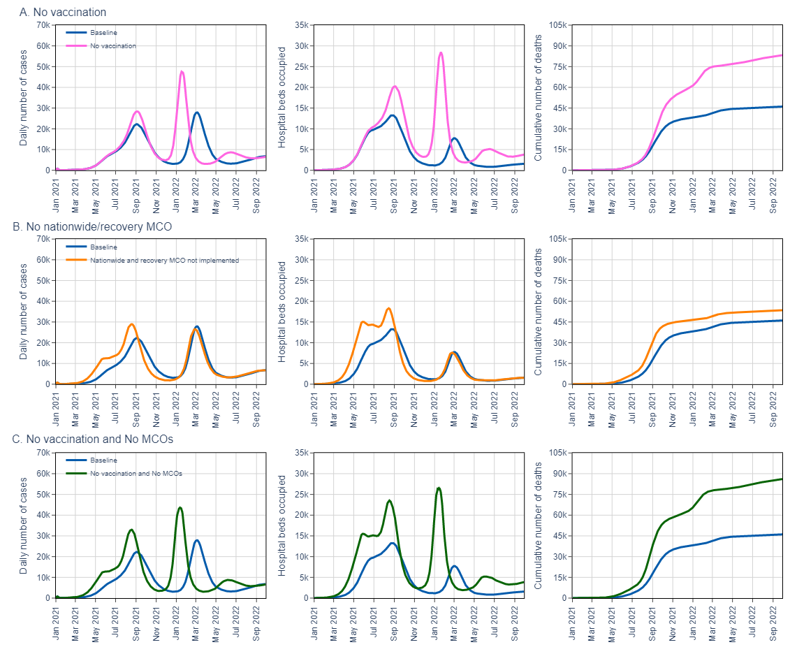
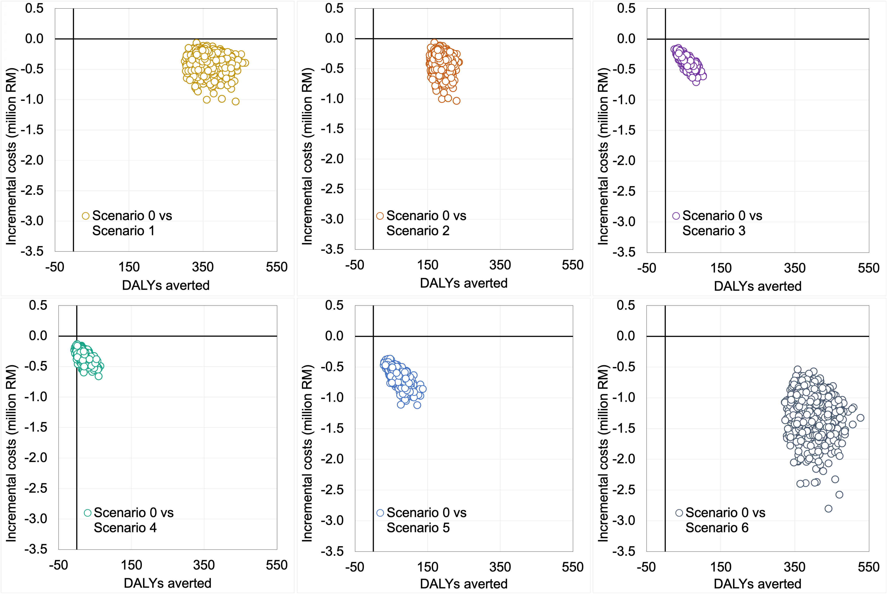

Abstract
Background: We evaluated the estimated impact and cost-effectiveness of two COVID-19 public health interventions implemented in Malaysia during 2021 and 2022: COVID-19 vaccination and varying degrees of nationwide movement control orders (MCOs).
Methods: We used a compartmental epidemiological model to simulate the impact of the public health interventions from 1 April 2021 to 30 September 2022. We compared the implemented strategy (baseline) against counterfactual scenarios of no vaccination; vaccination coverage reduced by 50%; no full MCO (intense mobility restrictions); no recovery phase of the MCO (less intensive mobility restrictions); and combinations of these scenarios. A linked economic model was used to estimate costs (in 2021 United States dollars) from a health system perspective and disability-adjusted life years (DALYs) of each scenario, compared to the baseline strategy. Future costs and outcomes were discounted at 3%. One-way and probabilistic sensitivity analyses were conducted to evaluate the robustness of the results.
Findings: Malaysia’s COVID-19 vaccination program with full and recovery MCOs (baseline scenario) reduced cases, prevented hospitalisations, and averted deaths when compared with all simulated counterfactual scenarios. The baseline scenario was dominant, saving between $23 and $569 million while averting 21,000 to 357,000 DALYs. Probabilistic sensitivity analysis indicated that at any threshold up to $11,000 (Malaysia gross domestic product per capita), the baseline scenario was certainly cost-effective. Findings were robust to varying key parameters, using undiscounted health outcomes, and adopting a limited societal perspective.
Interpretation: TThe public health strategies implemented in Malaysia to control the major epidemic waves in 2021 and 2022 were associated with major improvements in epidemiological indicators (reduced cases, hospitalisations and deaths) and lower health systems costs. The effects of vaccination appeared particularly important to mitigating the epidemics, although restrictions on mobility may have had synergistic effects.
Figures

